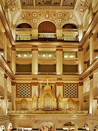

Joseph Jongen (1873-1953) s'est imposé comme le musicien belge le plus important après les disparitions du Maître César Franck (1822-1890) et de son infortuné élève, Guillaume Lekeu (1870-1894). Jongen a attiré l'attention sur sa personne en remportant, au deuxième essai, le Premier Prix de Rome (1897), belge certes donc moins prestigieux que son homologue français mais tout de même. Note. Le Prix de Rome (français) a déjà été présenté et commenté sur ce site. Il a fait des émules dans plusieurs pays (Etats-Unis, Canada, Pays-Bas puis Belgique suite à la proclamation de l'indépendance de celle-ci), sans jamais connaître un retentissement comparable du moins sur le long terme. Pourtant remporter le trophée représentait une belle victoire à une époque où l'on n'était pas encore blasé de tout et, de fait, Jongen fut fêté dans l'instant comme un héros local.
Jongen a surtout confirmé les espoirs que le jury avait mis en lui, ce qui n'est pas si fréquent dans les annales du fameux Concours. La question se pose dès lors de comprendre pour quelles raisons, de nos jours, on joue si peu sa musique. Il est vrai qu'il n'a pas fait le séjour prolongé que tant de belges aiment faire à Paris afin que s'ouvrent plus sûrement les portes du succès. Il n'a séjourné 6 mois dans la capitale française qu'à la faveur du périple européen que le Prix de Rome lui imposait pendant 4 ans. C'est d'ailleurs là qu'il a rencontré les modèles auxquels il est resté fidèle toute sa vie : Vincent d'Indy et Gabriel Fauré.
Rentré au pays, en 1902, il a été assez naturellement invité à enseigner au Conservatoire de Liège, ne le quittant pour l'Angleterre, avec femme et enfants, que l'espace des quelques années de la Première guerre. C'est à Londres qu'il a entendu le Sacre du Printemps de Stravinsky et c'est à son retour en Belgique qu'il a découvert l'oeuvre de Schönberg non sans crainte et étonnement. Il n'a en effet pas compris la soif d'évolution qui était en train de gagner l'Europe musicale ou du moins il ne l'a pas acceptée, la trouvant aussi contraire à l'enseignement qu'il avait reçu qu'à celui qu'il entendait transmettre. En 1920, il a rejoint le Conservatoire de Bruxelles dont il est devenu directeur cinq ans plus tard, jusqu'à sa retraite en 1939. Liège semble l'avoir perdu de vue, ne l'honorant guère comme l'un de ses plus illustres concitoyens : aucune rue à son nom, pas même d'une impasse. Par contre il y a une Avenue Joseph Jongen à Uccle, commune huppée de la capitale, allez comprendre.
Bien que les activités académiques aient absorbé une part de son temps, le catalogue de ses oeuvres est étoffé, proposant 137 numéros d'opus plus un grand nombre de partitions pour orgue que le compositeur n'a pas pris la peine de numéroter. Voyons d'abord le catalogue répertorié, en regroupant les genres.

L'orgue Wanamaker
Une oeuvre a davantage fait pour la notoriété internationale de Jongen que toutes les autres réunies, c'est la Symphonie concertante, pour orgue & orchestre (opus 81). Résultant d'une commande du magnat (de la grande distribution), collectionneur (d'instruments de musique) et mécène, Rodman Wanamaker (1863-1928), elle était destinée à célébrer la restauration de l'orgue monumental qui occupait le hall de son (grand) magasin à Philadelphie. Aujourd'hui encore, le "Wanamaker" demeure le plus grand instrument du genre dans le monde (28750 tuyaux, disposés sur 6 étages !), en principe capable d'imiter tous les sons de l'orchestre. La symphonie concertante est assez naturellement l'oeuvre de Jongen la plus souvent enregistrée, entre autres par : Virgil Fox accompagné par Georges Prêtre (EMI), Michael Murray accompagné par Edo de Waart (Telarc), Olivier Latry accompagné par Pascal Rophé (Coffret OPL, cf infra) et plus récemment, Christian Schmitt accompagné par Martin Haselböck (CPO). D'autres oeuvres symphoniques auraient mérité une reconnaissance comparable, tel le Concerto pour violon (opus 17), qui a fait l'objet d'un enregistrement plus soigné chez Hyperion dans sa collection consacrée aux concertos romantiques ou encore le Concerto pour piano (opus 127), dédié à Eduardo del Pueyo. La Passacaille & Gigue (opus 90) figure en complément de programme sur le CD CPO déjà mentionné. L'OPL (Orchestre Philharmonique de Liège) se devait d'honorer l'oeuvre de Jongen et il l'a fait ponctuellement en quelques occasions dont le CD a gardé la mémoire dans son intégrale des historiques de l'OPL (Coffret de 50 CD parus en offre limitée, chez Cyprès), comprenant, outre l'incontournable Symphonie concertante, le Concerto pour harpe (opus 129) et la Suite n°3 dans le style ancien (opus 95).
La musique vocale est peu présente seulement sous forme de mélodies éparses. Les Cinq mélodies (opus 57), avec accompagnement d'orchestre, ont été enregistrées par la soprano luxembourgeoise Mariette Kemmer et l'orchestre de Monte Carlo dirigé par le chef (liégeois !), Pierre Bartholomée. Vous retrouverez deux de ces mélodies et quelques autres, avec accompagnement de quintette à clavier, dans un très beau récital de Claire Lefilliâtre et l'ensemble Oxalys (Album paru chez Passacaille, CD 5, plages 3 à 7). Ecoutez encore la dernière mélodie composée par Jongen, intitulée La Musique et constatez que le compositeur est demeuré fidèle à son esthétique fin du siècle (précédent !). La cantate Comala (opus 14) qui a remporté le Prix de Rome figure également dans le coffret OPL déjà mentionné. On n'a pas jugé utile d'enregistrer celle (Callirhoe, opus 11) qui avait échoué au même concours deux ans auparavant.
L'oeuvre pour piano s'inscrit clairement dans la grande tradition française de Chabrier à Fauré en passant par Debussy, Séverac et surtout Ravel. On y trouve cependant constamment une touche personnelle qui rend cette musique extrêmement attachante (2 Pièces, opus 33). Elle tient sur cinq CD enregistrés en 2003 et 2005 par Diane Andersen malheureusement ils semble qu'ils aient disparu du catalogue Pavane. Bien que la critique ait été élogieuse, j'ai toujours trouvé que le pîano sonnait mal sans doute par la faute d'une prose de son désastreuse. A l'appui de cette thèse, je vous propose d'écouter dans les mêmes pièces que Gary Stegall a enregistrées dans un CD malheureusement unique et confidentiel, paru chez Klavier, et dont voici quelques extraits dans le désordre (5 Pièces : Airs de Fêtes, opus 69/7, Sarabande triste, opus 58, adorable Rondeau, opus 60/4, Menuet, opus 60/3 et Soleil à Midi, opus 33/2). C'est un peu rageant car cette musique est franchement belle et constamment intéressante.
La musique de chambre écrite par Jongen s'est clairement inscrite dans la mouvance de Gabriel Fauré. Elle a connu un sort plus enviable que celle pour piano seul. Le Trio à clavier (opus 30): l'intégrale des 3 quatuors à cordes a bénéficié de meilleurs soins de la part du Quatuor Gong. Concert à 5 où une harpe et une flûte complètent avec grâce un trio à cordes. ou la Rhapsodie (opus 70) pour piano & vents (CD Passacaille déjà mentionné, CD 3 plage 5).
L'autre partie du travail compositionnel de Jongen concerne l'orgue, son instrument de prédilection. Jongen a été organiste à l'église Saint-Jacques de Liège : l'instrument du lieu, de type Renaissance, a subi un nombre impressionnnat de restaurations plus ou moins judicieuses. Il fête cette année (2018) le 20ème anniversaire de sa dernière restauration en date et comme toujours en ce cas les avis divergent à propos des moyens mis en oeuvre et des résultats obtenus, certains critiquant avec quelques raisons le choix d'un diapason loderne et d'un tempérament . Ne manquez pas de le visiter lors de votre prochain passage par Liège lors d'un concert du festival annuel d'orgue (Frederic Munoz joue Hans Leo Hassler (1564-1612) : Magnificat I). Ce travail d'inventaire a été effectué bien plus tard par le grand organiste américain, John Scott Whiteley (1950- ), qui a publié un ouvrage de référence sur l'oeuvre d'orgue de Jongen. Retour à l'oeuvre pour orgue, qui a retenu l'attention des spécialistres, tout heureux de pouvoir élargir leur répertoire au contact d'une oeuvre de grande valeur.
L'orgue pratiqué par Jongen est évidemment celui, symphonique, de ses modèles Sonate héroïque (opus 94) interprétée ici sur l'instrument monumental de la Nieuwe Kerk de Katwijk aan Zee, aux Pays-Bas (mais vous la retrouverez en complément de programme sur le CD CPO déjà cité). Dans un registre plus intime, voici Prière (Quatre pièces pour orgue, l'instrument est cette fois celui de la Cathédrale d'Hereford, en Angleterre).
Léon Jongen (1884-1969), frère cadet de Joseph, est encore beaucoup moins connu. Les fidèles du Concours Reine Elisabeth de Belgique se souviennent éventuellement que son Concerto pour violon a été retenu comme œuvre imposée lors des finales de l'édition 1963. Après des études au conservatoire de Liège, il remporte le Premier Grand Prix de Rome de Belgique avec sa cantate Les fiancés de Noël (1913), puis occupe les postes de directeur et chef d'orchestre de l'Opéra français de Hanoï et directeur du Conservatoire royal de Bruxelles. Il succède à son frère Joseph Jongen à l'orgue de l'église Saint-Jacques de Liège. Il effectue de nombreux voyages en Asie (Chine, Indochine, Japon) et au Maroc. Installé au Tonkin, il est nommé directeur de la musique et premier chef d'orchestre de l'Opéra français d'Hanoï. Nommé professeur de fugue au Conservatoire de Bruxelles à son retour en Belgique en 1934, il succède à son frère comme directeur de cet établissement de 1939 à 19491. Il est aussi recteur de la chapelle de la Reine Élisabeth (1956). Il est l'auteur de nombreuses œuvres lyriques et instrumentales.
Le violoniste Charles Jongen fait également partie de la famille mais j'avoue ne pas avoir cherché à en savoir davantage.
Deux ans avant de mourir, en 1951, Jongen écrit encore ce beau Tryptique symphonique (opus 137), qui résume bien la position en porte-à-faux d'un homme sincèrement épris de musique mais qui persévère, contre vents et marées, à baigner son lyrisme discret de la lumière d'une lampe à huile.
En 1929, on trouvait déjà, dans la presse (La Nation Belge, 12/03/1929) des commentaires du genre qui suit
Monsieur Jongen
[…] est, incontestablement, un des
grands maîtres belges de la musique. Son
inspiration lyrique d’une abondance et
d’une variété étonnante, le caractère à
la fois nonchalant, inquiet, souple et chaleureux
des idées mélodiques, la science
sûre et l’originalité de son écriture donnent
à toutes ses compositions, quel qu’en soit
le genre et la destination, un cachet de
personnalité bien marquée.
Joseph Jongen fait partie de ces musiciens qu'on se contente d'honorer quatre fois par siècle lors des années se terminant par 03, 23, 53 et 73, c'est regrettable.